1. Instal·lació de GNS3
1. Installation from Packages
1.1 Ubuntu-based distributions (64-bit only)
These instructions are for Ubuntu and all distributions based on it (like Linux Mint).
when prompted whether non-root users should be allowed to use wireshark and ubridge, select Yes both times If you want IOU support
2. To install Docker CE
2.1 UBUNTU VERSION (Xenial_and_newer)
Remove any old versions:
Install the following packages:| Bash | |
|---|---|
| Bash | |
|---|---|
Add the appropriate repo:
| Bash | |
|---|---|
2.2 MINT___ VERSION
Step 1: Install Dependency packages
Start the installation by ensuring that all the packages used by docker as dependencies are installed.
| Bash | |
|---|---|
Step 2: Add Docker’s official GPG key
Import Docker GPG key used for signing Docker packages.
| Bash | |
|---|---|
Step 3: Add the Docker repository
Add Docker upstream repository to your Linux Mint 21 so you can install the latest stable release of Docker.
| Bash | |
|---|---|
The command above will add a new line to additional repositories file.
| Bash | |
|---|---|
Step 4: Install Docker Engine and Compose Update the apt package index.
| Bash | |
|---|---|
Then install the latest version of Docker CE and Docker Compose
Check the version of docker installed| Bash | |
|---|---|
Note
docker version
Client: Docker Engine - Community Version: 20.10.19 API version: 1.41 Go version: go1.18.7 Git commit: d85ef84 Built: Thu Oct 13 16:46:58 2022 OS/Arch: linux/amd64 Context: default Experimental: true
Server: Docker Engine - Community Engine: Version: 20.10.19 API version: 1.41 (minimum version 1.12) Go version: go1.18.7 Git commit: c964641 Built: Thu Oct 13 16:44:47 2022 OS/Arch: linux/amd64 Experimental: false containerd: Version: 1.6.8 GitCommit: 9cd3357b7fd7218e4aec3eae239db1f68a5a6ec6 runc: Version: 1.1.4 GitCommit: v1.1.4-0-g5fd4c4d docker-init: Version: 0.19.0 GitCommit: de40ad0
Finally, add your user to the following groups:ubridge libvirt kvm wireshark docker
Opcion 1
| Bash | |
|---|---|
Opcion 2
| Bash | |
|---|---|
Restart your user session by logging out and back in, or restarting the system.
3. Ús bàsic de GNS3
3.1 Importar un appliance
Prova a importar un appliance seguint aquest tutorial.
3.2 Prova bàsica de xarxa
GNS3 disposa de dues formes de connexió a la xarxa, amb cloud i amb NAT. Si treballes amb Linux has de tindre en compte que no funciona el cloud sobre la targeta wifi i si vols treballar d'eixa forma hauràs de fer-ho amb cable.
Anem a provar la connexió bàsica amb un VPC que no és més que un PC virtual que ens proporciona una consola. Suposa un avantatge respecte a Virtual Box o VM Ware ja que no haurem de tindre una màquina diferent per a fer de clients.
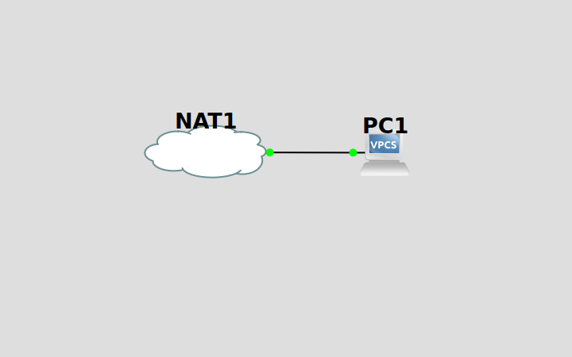
Per tal de comprovar la IP que ens ha donat obrim la consola del VPC...
Podem fer ping des del nostre PC amfitrió...
Ping des de l'amfitrió
xus@tourmalet:~$ ping 192.168.122.205
PING 192.168.122.205 (192.168.122.205) 56(84) bytes of data. 64 bytes from 192.168.122.205: icmp_seq=1 ttl=64 time=0.348 ms 64 bytes from 192.168.122.205: icmp_seq=2 ttl=64 time=0.778 ms 64 bytes from 192.168.122.205: icmp_seq=3 ttl=64 time=0.787 ms
--- 192.168.122.205 ping statistics --- 3 packets transmitted, 3 received, 0% packet loss, time 2046ms rtt min/avg/max/mdev = 0.348/0.637/0.787/0.204 ms
3.3 Navegació
No ens cal una màquina per a provar si un ordinador navega, GNS3 ens facilita la tasca amb un appliance de Firefox. Cal configurar la xarxa amb dhcp.
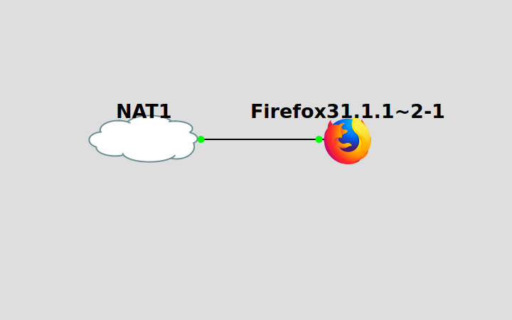
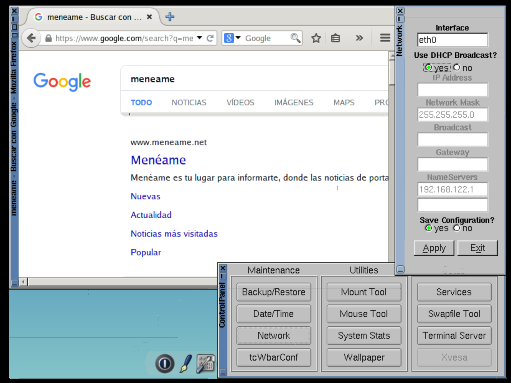
3.4 Xarxa bàsica
El següent esquema correspon a una xarxa bàsica en la que els ordinadors poden navegar.
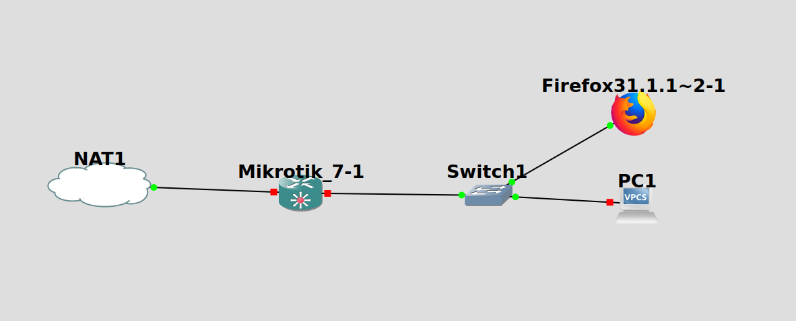
Cal configurar el
Mikrotikper a poder navegar, per tant haurem de configurar les adreces de la partLAN, activar unservidor dhcpi fer una regla en el firewall de tipusmasqueradeper a que el router puga ferNAT.
Fem la configuració amb Winbox que després explicarem com funciona.
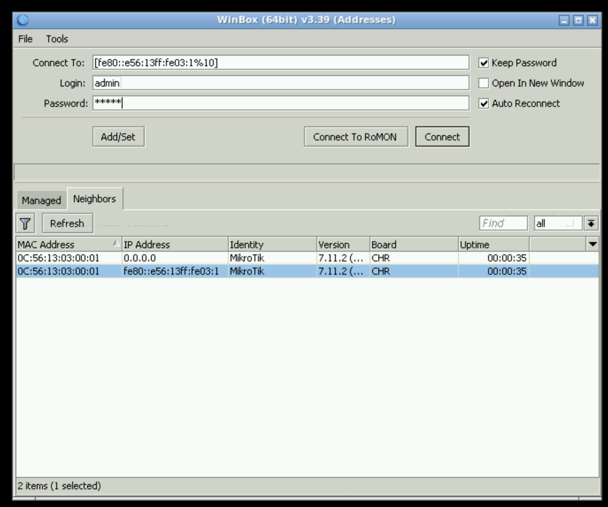
Canvia el nom de les interfícies del router a WAN i LAN.
Observa com en la interfície WAN s'ha creat automàticament un dhcpclient i obté l'adreça per dhcp. Configurem la LAN amb 10.0.0.1/24
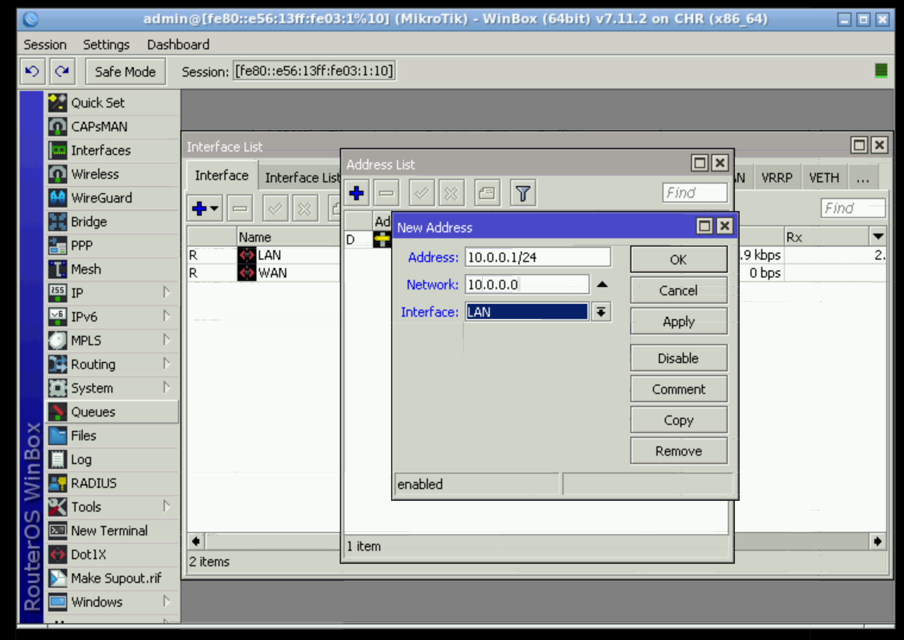
Fem el server dhcp directament des del setup
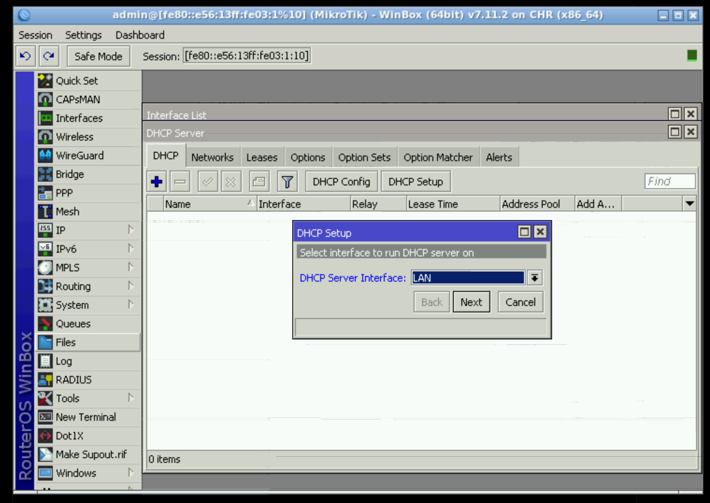
Indiquem amb una regla de firewall de tipus NAT que a tot tràfic que vaja a eixir per la WAN se li aplique un masquerade.
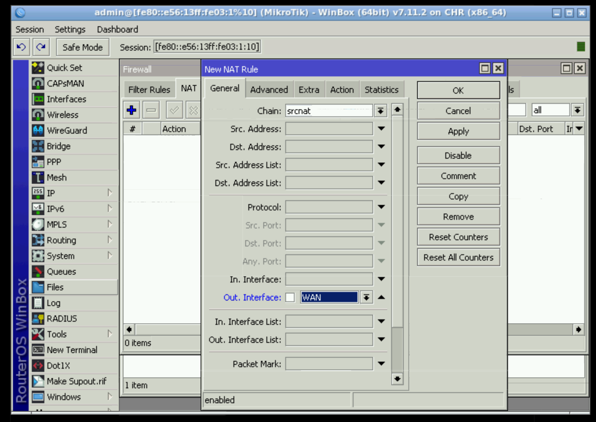
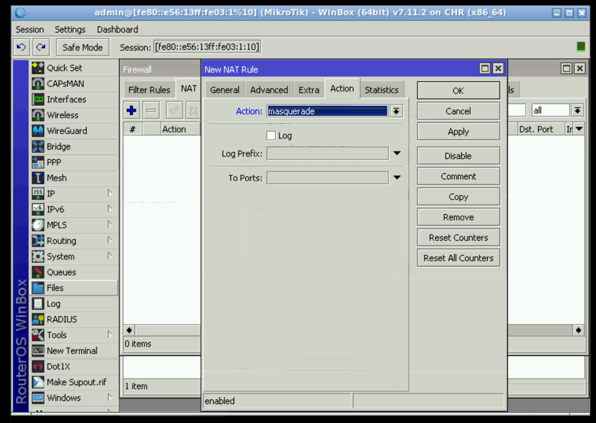
Comprovem que assigne les adreces correctes...
Des de l'appliance de Firefox es veu com es pot navegar.
4. Mikrotik
4.1 Appliance
Baixa alguna versió estable de la web de Mikrotik en la secció Cloud hosted routers i tipus Raw disk image.
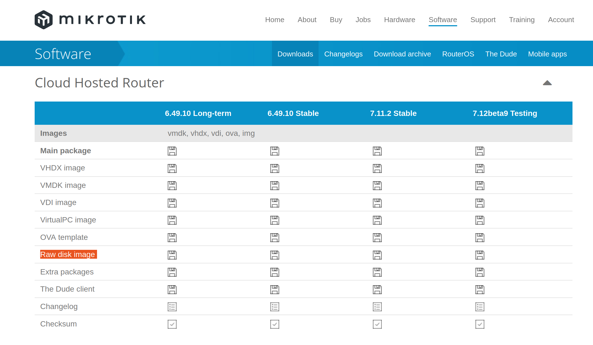
Fem una màquina Qemu nova.
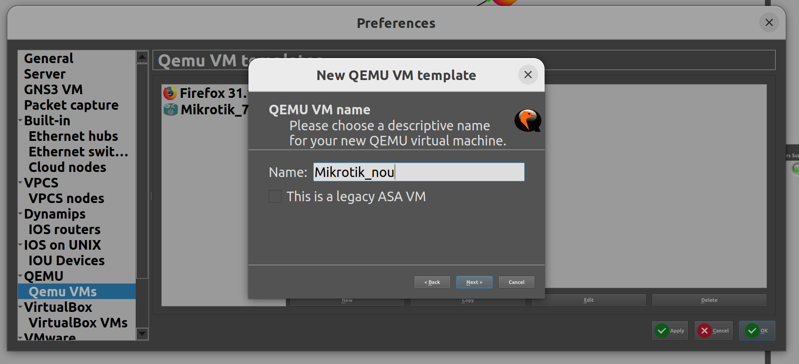
Selecciona la imatge baixada.
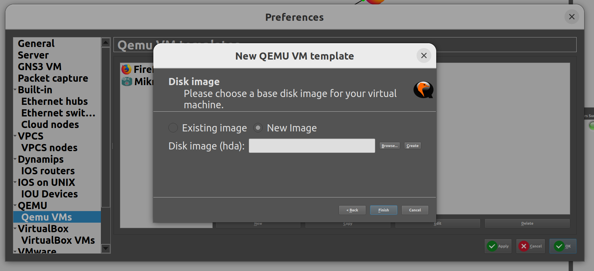
Canvía el símbol.
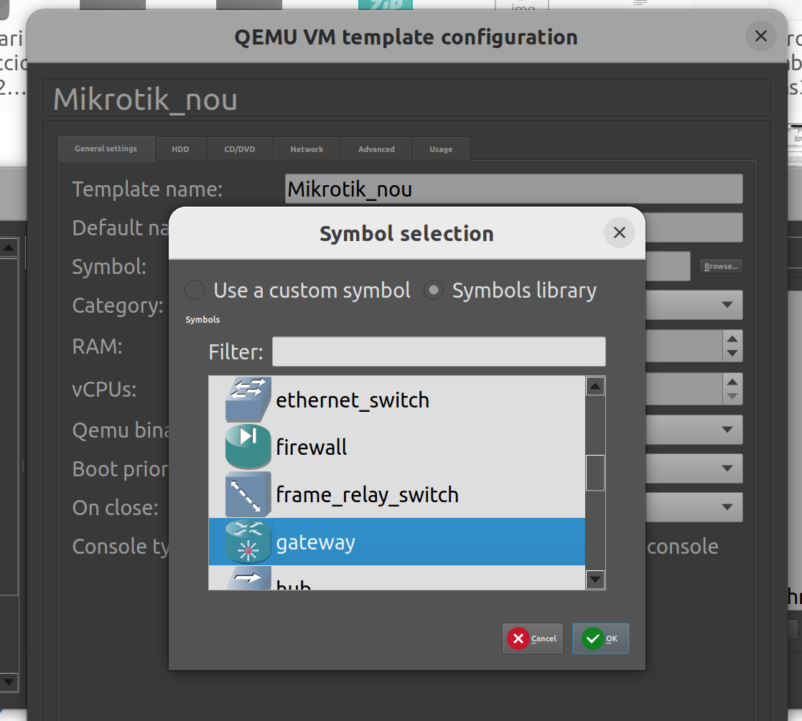
4.2 Configuració
Podem configurar Mikrotik de tres formes diferents.
- Amb
Winbox - Amb un appliance de
GNS3 - Navegador web
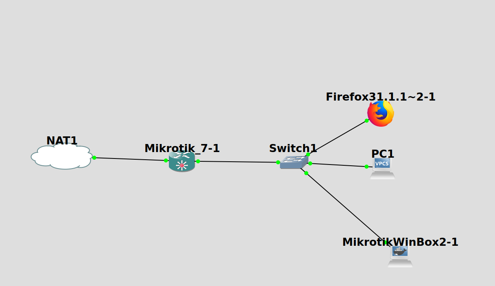
Warning
L'aplicació de Winbox està disponible per a Windows, si vols utilitzar-la en Linux has de fer ús de Wine.
Warning
Per a poder utilitzar el navegador cal que router tinga alguna adreça IP i que hi haja enrutament fins la màquina on utilitzes el navegador.